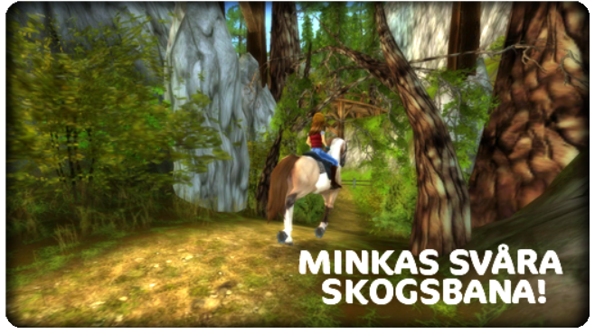

2012. április 11., szerda
Hejsan alla Star Stable-fans!
Här kommer veckans onsdagsuppdatering!

Ny tävling:
- Minimum level 11
- Minka utanför Firgrove är nu klar med renoveringen av den gamla klassiska, men extremt svåra skogsbanan. Den har varit stängd i många år då den har ansetts vara för svår och farlig. Hon behöver någon som kan testa den åt henne innan hon vågar öppna den igen
Arbetet med att göra Star Stable ännu bättre fortsätter framåt i rask takt!
Vänliga hälsningar:
Star Stable-gänget